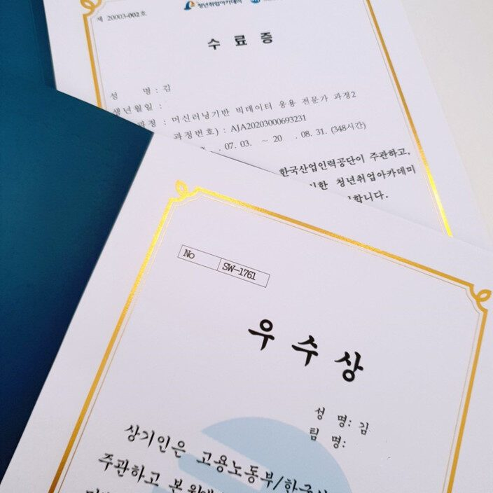

1. 아무것도 몰라도 신청하세요.
저는 컴퓨터 관련 공대생 4학년임에도 불구하고 여러 언어를 사용했지만 이제 막 시작한 사람보다도 못한다고 할 정도로 아는 거 하나 없고 잘하는 언어도 없고 내가 하고 싶은 것도 진로도 없던 학생으로 신청할 때부터 많이 떨렸습니다. 내가 정말 아무것도 아는 게 없는데 이 수업을 듣고 민폐를 끼치는 거 아닐까 고민도 했지만 남은 시간이 아까워 신청했고 후회 없는 경험이었습니다. 수업을 시작할 때 관련 이공계 학생들 수업이라 어렵고 못 따라갈 거로 생각했지만 정말 모든 선생님이 아주 기초부터 하나씩 도와주십니다. 비전공자 수업이라고 생각해도 될 정도로 하나하나 다 도와주시고 가르쳐 주십니다. 진짜 너무 쉬워서 모를 수가 없는 기초를 몰라도 걱정하지 말고 배울 수 있습니다.
2. 모르면 걱정하지 말고 질문하고 도움을 요청하세요.
수업을 나가면서 자신이 따라가지 못하고 멈춰있을 때 남들은 따라간다고 눈치 보지 말고 선생님께 질문하고 도움을 요청하면 됩니다. 처음에 따라가지 못해 부끄러워 오기로 수업을 따라가려 했지만 어느 수준이 지나면 결국 뒤에 모든 수업내용을 밀려 배운 게 없이 그저 따라 쓰기만 하게 되었습니다. 그냥 사소한 거라도 오류가 나면 질문하세요. 선생님 모두가 도와주십니다. 모든 선생님이 친절하세요. 나중에 프로젝트 할 때 모르는 거 선생님들 붙잡고 질문하세요. 선생님들의 도움으로 하나하나 해결되었습니다. 진짜 다시 생각해도 선생님들 다 정말 감사했습니다.
3. 친구 없어도 친해진다는 게 뭔지 알게 됩니다.
처음 신청하기 전 학교, 학과에서 혼자 신청하게 돼서 고민이 많아 검색 도중 유튜브에서 "스마트미디어인재개발원인쌤TV"를 찾아보았는데 수강자 후기에 친구가 없어도 친해진다는 내용을 보고 신청했습니다. 프로젝트를 매일 같이하다 보니 자연스럽게 친해지게 됩니다. 팀장도 팀원도 다들 같이 노력하다 보니 친해지게 됩니다, 저 같은 I 성향 사람도 친해졌으니 걱정 마세요. 다만 팀 프로젝트 하다가 고혈압이 오게 될 수도 있지만 좋은 팀원들 만나 극복하고 그러다 더 친해지게 되었습니다.
4. 오프라인으로 수업을 들었으면 좋겠습니다.
코로나 때문에 온라인 수업을 하겠다고 생각했지만 조대는 오프라인 수업을 했고 매일 학교에 나와야 하는 게 처음에 너무 힘들었습니다. 하지만 집에서 자다가 수업 바로 전에 일어나 캠을 켜는 게 아니라 나갈 준비를 하고 사람들을 직접 만나다 보니 정신이 깨어있을 수 있었고 오프라인이라 바로바로 모르는 걸 질문하고 도움받아 편했습니다. 팀원과의 대화도 더 편하게 가능했습니다. 날씨가 좋지 않은 날에는 정말 힘들고 불편했지만 또 다른 장점인 간식도 정말 많이 먹었습니다. 저희 서대희 담임 선생님과 조교 선생님, 다른 선생님들이 사주신 과자나 피자로 수업 듣는 동안 배불리 수업 들었습니다.
5. 작은 단점이라면 여러 특강도 좋았지만 프로젝트 하기에도 부족한 시간에 특강이 생겨서 당황스러웠고 그 특강이 4시간 정도의 매우 짧은 시간 지나간 내용이라 특강은 기억나는 게 없었습니다. 그나마 기억에 남았던 포트폴리오같이 한 주제에 대한 특강을 여러 번 하시는 게 좋았을 것 같아서 그 점은 아쉬웠습니다.
아마 졸업 후 취직하기에 제가 많이 부족해 공부가 더 필요하다면 스마트 미디어 인재 개발원의 다른 과정 수업을 들어야겠다고 생각될 정도니 늦기 전에 저같이 진로 고민 많은 분은 꼭 신청하셨으면 좋겠습니다.
